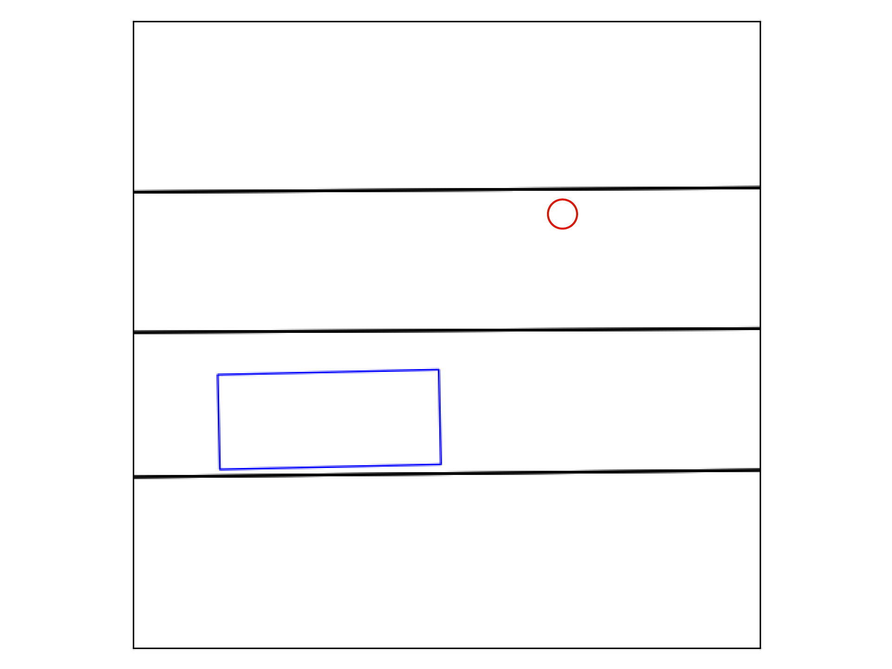

This is a schematic of a top-down view of a pedestrian crossing a road. There is also a vehicle on a road. The pedestrian is denoted by a red circle. The vehicle is denoted by a blue rectangle. The black lines show the edges of the road and lane dividers.
This shows the real-world image corresponding to the schematic.
Below are three pairs of gifs. Each shows a pedestrian crossing a road. All gifs are in the same style as the schematic. All gifs should be animated and there should be none missing. If any is not animated or not displaying correctly, please do not do the survey and let Erica Weng (eweng@andrew.cmu.edu) know!
For each pair: in one gif the pedestrian movement is real, and in the other it is fake. Which is which? Select the radio button for the one you think is real.
If you are unsure, please make your best guess based on your own experience as a pedestrian or what you have observed in other pedestrians.